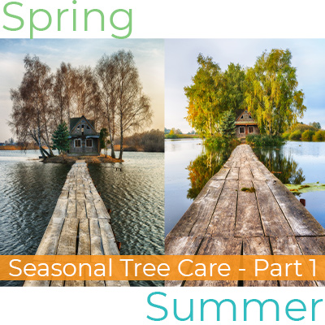

Taking care of your trees is always important. Nonetheless, sometimes misguided attempts at care end up causing destruction rather than healing. Just as any other living thing, trees can get stressed. Just as stress has negative impacts on people, this type of pressure can cause irreparable damages to trees. Performing the wrong care task at the wrong time or incorrectly can lead to tree death. Providing tree care is good. However, knowing what is best to do and when during the year to do it can greatly impact how positive that care is for the tree. Plus, there are different dangers during different seasons and that greatly influences how best to care for your trees. As an expert tree company in Barnegat, Ben Bivins Tree Experts is here for all your tree service needs, no matter what time of year it is.
Spring
Spring is a very active time for landscaping and, of course, for gardening. The same is true for tree care. As spring approaches, the four things to considering doing for your trees are plant, feed, protect, and inspect.
Plant – After your planning stage in winter, spring is a great time of year to plant new trees once the danger of frost is gone. Newly planted trees usually require a lot of water. Because spring is typically a rainy season, it is a great time to plant and give your new trees the best chance at survival. Plus, planting now gives them 3 seasons to grow and strengthen before winter.
Feed – For established trees, this time of year is ideal for fertilization. Giving trees a boost at this time can help them fend off spring hazards. You should use fertilizer sparingly, or not at all, on immature, growing trees because there is a risk of burning young roots. If you are unsure if your trees need to be fertilized, give us a call and we can help.
Protect – Because spring is usually such a wet season, fungi thrive this time of year. A good defense is always best when it comes to preventing diseases and pests from ravaging your trees. It is best to spray your trees to protect against diseases before any signs of damage which is why spring is an ideal time to apply insecticides and preventatives.
Inspect – After winter, it is always a good idea to take a walk around your property to look for signs of broken or dangling limbs and branches. It is always better to remove these before they fall and cause harm to you and your property. Just as spring storms can be advantageous for watering purposes, they can be disastrous to weakened or broken trees. We never advise homeowners attempt to remove limbs on their own. If you need assistance with damaged trees on your property, give your favorite tree company in Barnegat a call at 609-698-4992.
Summer
Summer is for water, protect, and inspect. With summer in full swing, there is a little less action happening in the garden aside from watering and maintenance. Performing excessive maintenance jobs on trees is not advisable during the heat of summer. Trees need to be able to focus on growing and establishing strong roots rather than healing from a large pruning job.
Water – For trees that are not mature or well-established, a good watering routine is still important. Especially during long, hot weeks with no rain. Propper watering technique is to give the tree a good soaking. Not providing enough water can lead to shallow root growth which makes for very weak trees.
Protect – Just as in spring, summer is a very busy time for bugs and pests. If you didn’t catch them in spring, they’re going to be very evident by summer. Beetles like the emerald ash borer can do some major damage to ash trees while Elms are susceptible to Dutch Elm Disease. Contact us at the first sign of trouble to stay ahead of killer pests.
Inspect – In order to know anything is wrong, you need to continuously examine your trees, the branches, the trunk, and the leaves. Any impairments should be reported immediately to your go-to tree company in Barnegat so we can figure out the best solution. Broken and damaged limbs should be removed as soon as possible to avoid any catastrophes.
As an Expert Tree Company in Barnegat, We Know Trees
Nobody knows trees like we know trees. This includes where to plant them, where to plant them, how to best take care of them, and when it’s best to remove them. Proper tree maintenance is essential in preserving the safety of your property. Diseased trees can drop limbs resulting in personal injury or property damage. Keep your trees in the best health with our expert tree care services.
Be sure to check back next month to read about what to do with your trees in fall and winter!